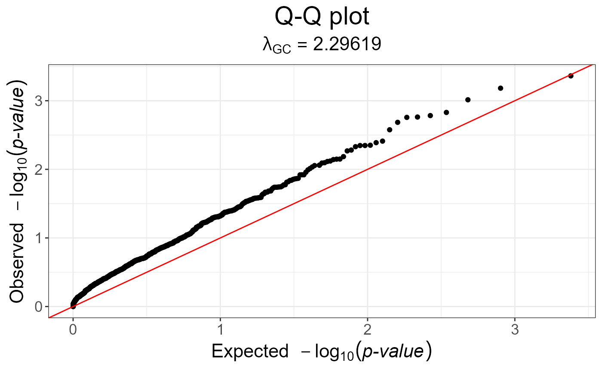

Compute the MAX3 statistic, which tests for three genetic models (additive, recessive and dominant).
snp_MAX3(Gna, y01.train, ind.train = rows_along(Gna), val = c(0, 0.5, 1))Arguments
- Gna
A FBM.code256 (typically
<bigSNP>$genotypes).
You can have missing values in these data.- y01.train
Vector of responses, corresponding to
ind.train. Must be only 0s and 1s.- ind.train
An optional vector of the row indices that are used, for the training part. If not specified, all rows are used. Don't use negative indices.
- val
Computing \(\smash{\displaystyle\max_{x \in val}}~Z_{CATT}^2(x)\).
Default is
c(0, 0.5, 1)and corresponds to the MAX3 statistic.Only
c(0, 1)corresponds to MAX2.And only
0.5corresponds to the Armitage trend test.Finally,
seq(0, 1, length.out = L)corresponds to MAXL.
Value
An object of classes mhtest and data.frame returning one
score by SNP. See methods(class = "mhtest").
Details
P-values associated with returned scores are in fact the minimum of the p-values of each test separately. Thus, they are biased downward.
References
Zheng, G., Yang, Y., Zhu, X., & Elston, R. (2012). Robust Procedures. Analysis Of Genetic Association Studies, 151-206. doi:10.1007/978-1-4614-2245-7_6 .
Examples
set.seed(1)
# constructing a fake genotype big.matrix
N <- 50; M <- 1200
fake <- snp_fake(N, M)
G <- fake$genotypes
G[] <- sample(as.raw(0:3), size = length(G), replace = TRUE)
G[1:8, 1:10]
#> [,1] [,2] [,3] [,4] [,5] [,6] [,7] [,8] [,9] [,10]
#> [1,] 0 0 NA 0 2 1 0 NA NA 2
#> [2,] NA 0 NA 2 NA 2 2 2 2 1
#> [3,] 2 2 2 2 1 2 1 0 2 0
#> [4,] NA 1 0 NA 0 2 2 0 0 2
#> [5,] 0 0 NA NA 2 NA 2 2 NA NA
#> [6,] 1 0 NA 2 2 NA 1 2 2 0
#> [7,] 2 NA 1 1 1 NA 1 2 1 NA
#> [8,] 2 2 1 0 1 NA NA 2 0 1
# Specify case/control phenotypes
fake$fam$affection <- rep(1:2, each = N / 2)
# Get MAX3 statistics
y01 <- fake$fam$affection - 1
str(test <- snp_MAX3(fake$genotypes, y01.train = y01))
#> Classes 'mhtest' and 'data.frame': 1200 obs. of 1 variable:
#> $ score: num 1.7124 0.0178 2.7611 0.1309 0.4396 ...
#> - attr(*, "transfo")=function (x)
#> - attr(*, "predict")=function (xtr)
# p-values are not well calibrated
snp_qq(test)

# genomic control is not of much help
snp_qq(snp_gc(test))
 # Armitage trend test (well calibrated because only one test)
test2 <- snp_MAX3(fake$genotypes, y01.train = y01, val = 0.5)
snp_qq(test2)
# Armitage trend test (well calibrated because only one test)
test2 <- snp_MAX3(fake$genotypes, y01.train = y01, val = 0.5)
snp_qq(test2)